AetherCanvas AI
Pictures and video from words, on your own PC. Text to image, image to image, inpainting, upscaling and video in one window, with ComfyUI and Python doing the work underneath.
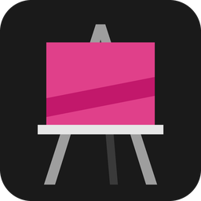
Creative & Studio Suite. One launcher installs the apps, keeps them up to date and starts them; installed together, they find each other as plugins.
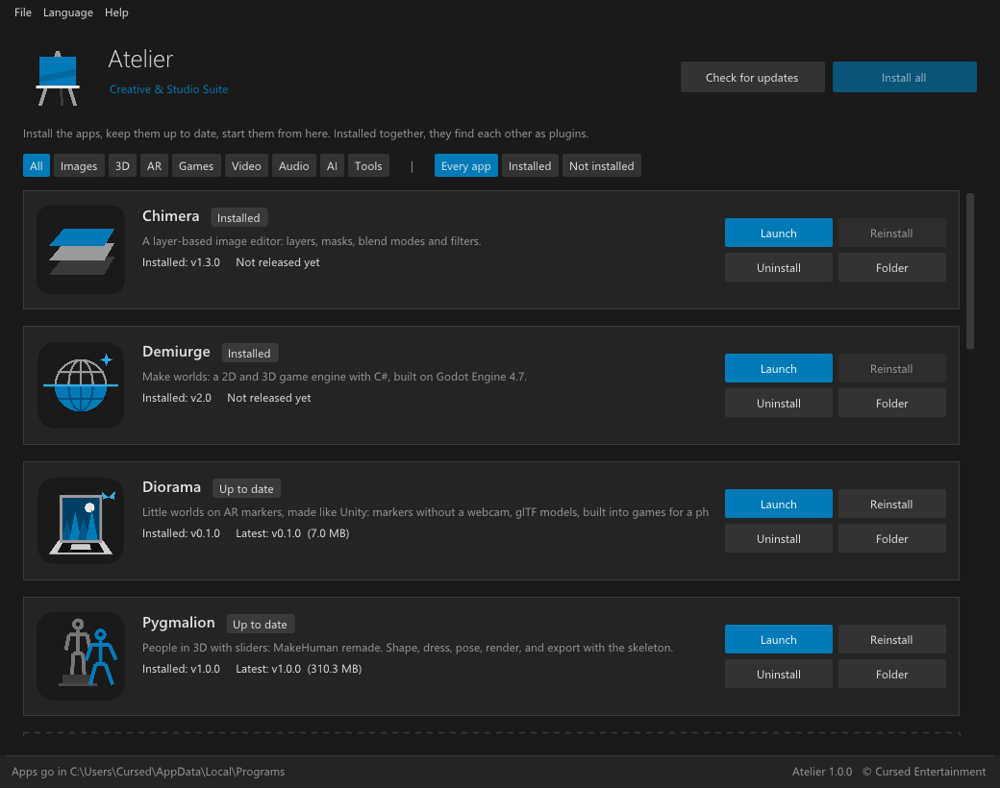
Unzip Atelier-Launcher-win64.zip and run install.bat. The launcher asks GitHub for each app's latest release, installs it in %LOCALAPPDATA%\Programs\<App> with Start menu and Desktop shortcuts, and updates it when a new one is out. Chimera finds Bathos and Mimic there for Filter > Bathos and Filter > Mimic. Twelve languages, from English to Deitsch.
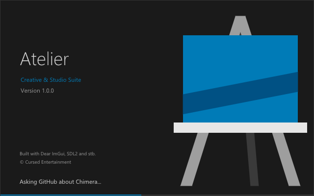
Pictures and video from words, on your own PC. Text to image, image to image, inpainting, upscaling and video in one window, with ComfyUI and Python doing the work underneath.
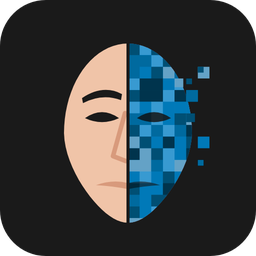
Every Changeling in one window: face swap on photos, videos and the webcam, makeup, hair and beards, age and more, each effect a set of sliders.
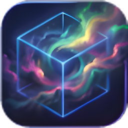
360° skyboxes from a prompt. Look round them, repair the seam, upscale them and export cube maps for games and 3D scenes.
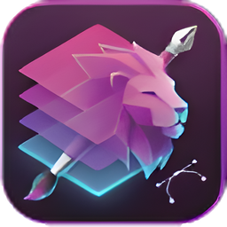
A layer-based image editor: layers, masks, blend modes, filters and vector paths. Bathos and Mimic plug into its Filter menu.
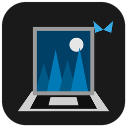
An augmented-reality engine made like Unity: scenes on markers, tables, floors and walls, scripted in JavaScript and built into games for a phone's browser or a Windows player.
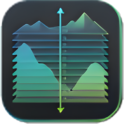
A picture in, its depth map out: near is bright, far is dark. For 3D photos, parallax, fog and focus effects.
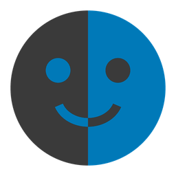
One person's face onto a picture or a video, matched to the light and the expression.
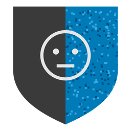
Poisons and antidotes for your own pictures: cloaks the faces in them against face recognition and face swaps, and tests how much of a cloak survives.
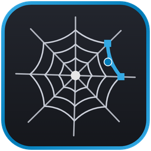
Pictures into clean vector art (SVG): traced into smooth curves and flat shapes, or painted from words first and then traced.
Make worlds: a 2D and 3D game engine with C#, built on Godot Engine 4.7.
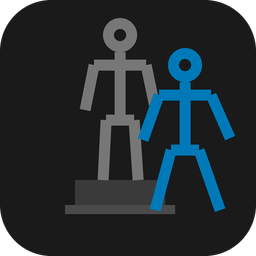
People in 3D with sliders: MakeHuman remade. Shape, dress, pose, render, and export with the skeleton.
A file compressor written from scratch, for the command line and Explorer's right-click menu.
Whole songs, with vocals, from a style: lyrics written for you, covers, remixes, stems, tempo and key.
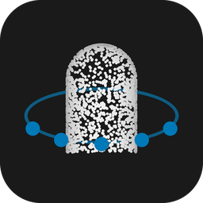
Photos to a textured 3D model: photogrammetry in three steps, out as GLB, OBJ or STL.
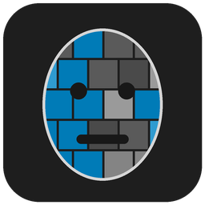
A disguise for video calls: your face as a shifting mosaic of AI-generated strangers, sent to Zoom, Teams, Discord or Meet as an ordinary camera.
| System | Windows 10 or 11, 64-bit |
|---|---|
| Processor | any 64-bit processor |
| Memory | 4 GB RAM |
| Graphics | any graphics card with OpenGL 3.0 |
| Disk | 5 MB for the launcher, plus each app you install (see its own page) |
| Internet | to download the apps |